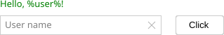

Быстрый старт. Собираем статическую страницу
Описание урока
Создание простой статической страницы помогает понять, как устроен БЭМ-проект. В документе показаны основы работы с БЭМ-технологиями, уровнями переопределения и библиотеками БЭМ.
Вы научитесь:
В результате выполнения всех шагов вы получите страницу с полем ввода, кнопкой и фразой приветствия пользователя, как показано на рисунке ниже. Имя, введенное в поле, при нажатии на кнопку, будет отображаться в приветствии.

Для работы с примерами, описанными в документе, необходимы базовые навыки:
HTML
CSS
JavaScript
БЭМ
Важно! В документе не рассматриваются вопросы сборки БЭМ-проекта.
Минимальные требования
Чтобы начать работу, необходимо установить:
Важно! Пользователям операционной системы Windows необходимо установить Git Bash.
Что используем
Шаблонный репозиторий project-stub
Технологии:
Клонируем БЭМ-проект
Чтобы быстро развернуть БЭМ-проект, воспользуемся локальной копией шаблонного репозитория project-stub, который содержит необходимый минимум конфигурационных файлов. В project-stub по умолчанию подключены основные БЭМ-библиотеки:
Копию project-stub можно сделать с помощью Git.
Примечание. В операционных системах OS X или Linux все команды выполняются в терминале. Пользователям Windows необходимо выполнять команды в Git Bash. Убедитесь, что Git Bash запущен от имени администратора.
Чтобы создать локальную копию project-stub, выполните следующие действия:
Склонируйте project-stub в директорию
start-project:git clone https://github.com/bem/project-stub.git --depth 1 start-projectПерейдите в директорию проекта:
cd start-projectУстановите зависимости:
npm install
Примечание. Не используйте права суперпользователя
rootпри установке npm-зависимостей.Запустите сервер с помощью ENB:
npm start
По умолчанию сервер запустится на порте 8080.
Примечание. Если порт
8080используется другой программой, его можно переназначить:npm start -- -p 8081
Откройте браузер и введите адрес http://localhost:8080/desktop.bundles/index/index.html. Должна открыться страница с примерами блоков библиотеки bem-components.
После сборки и установки всех зависимостей файловая структура проекта будет иметь следующий вид:
start-project/
.bem
.enb/ # Конфигурационные файлы для сборщика ENB
common.blocks/ # Базовые реализации блоков
desktop.blocks/ # Директория блоков проекта
desktop.bundles/ # Директории бандлов проекта
node_modules/ # Установленные модули Node (пакеты)
.bemrc #
.editorconfig # Конфигурация EditorConfig для поддержки разных редакторов и IDE
.gitignore # Исключение файлов и директорий в Git
.travis.yml # Автоматический запуск линтеров в Continuous Integration
favicon.ico #
gulpfile.js # Конфигурационный файл для сборщика Gulp
package.json # Описание проекта для npm
README.md # Текстовое описание проекта
Создаем страницу
Директория desktop.bundles в проекте содержит файлы, полученные в результате сборки. Такие файлы в БЭМ-методологии называются бандлами. В простейшем случае бандлы собираются для каждой страницы: одной директории бандла соответствует одна страница проекта. По умолчанию в проекте присутствует страница index.
Чтобы добавить новую страницу:
Создайте директорию с именем страницы (например,
hello) вdesktop.bundles.Создайте файл
hello.bemjson.jsв директорииdesktop.bundles/hello/.В результате корневая директория проекта будет выглядеть так:
start-project/ .bem .enb/ common.blocks/ desktop.blocks/ desktop.bundles/ index/ # Директория бандлов страницы index hello/ # Директория бандлов страницы hello hello.bemjson.js # Описание страницы helloИмена файлов и директорий соответствуют соглашению по именованию.
Описываем страницу в BEMJSON-файле
Чтобы создать описание страницы, необходимо представлять ее структуру. Создадим блок-контейнер hello, в котором разместим поле ввода, кнопку и текст приветствия. Блоки input (поле ввода) и button (кнопка) возьмем из готовой библиотеки bem-components, а текст приветствия реализуем как элемент greeting блока hello.
Подробнее о BEMJSON-формате входных данных.
Чтобы описать структуру страницы, отредактируйте файл desktop.bundles/hello/hello.bemjson.js:
Добавьте блок
hello.({ block : 'page', title : 'hello', head : [ { elem : 'css', url : 'hello.min.css' } ], scripts : [{ elem : 'js', url : 'hello.min.js' }], mods : { theme : 'islands' }, content : [ { block : 'hello' } ] })Поместите элемент
greetingс текстом приветствия пользователя (полеcontent) в блокhello.({ block : 'page', title : 'hello', head : [ { elem : 'css', url : 'hello.min.css' } ], scripts : [{ elem : 'js', url : 'hello.min.js' }], mods : { theme : 'islands' }, content : [ { block : 'hello', content : [ { elem : 'greeting', content : 'Hello %user%!' } ] } ] })Добавьте блоки
inputиbuttonв блокhello.({ block : 'page', title : 'hello', head : [ { elem : 'css', url : 'hello.min.css' } ], scripts : [{ elem : 'js', url : 'hello.min.js' }], mods : { theme : 'islands' }, content : [ { block : 'hello', content : [ { elem : 'greeting', content : 'Hello %user%!' }, { block : 'input', mods : {theme : 'islands', size : 'm'}, name : 'name', placeholder : 'User name' }, { block : 'button', mods : {theme : 'islands', size : 'm', type : 'submit'}, text : 'Click' } ] } ] })
Чтобы убедиться, что на странице появились все описанные блоки и элементы, откройте страницу hello в браузере: http://localhost:8080/desktop.bundles/hello/hello.html.
Создаем блоки
Блоки из готовой библиотеки появились на странице, но они не взаимодействуют. Теперь создадим блок hello, который будет брать данные из поля ввода и подставлять их в приветствие. Для этого:
Создайте директорию с именем
helloвdesktop.blocks.Разместите в ней файлы реализации блока:
hello.js— описывает поведение блока;hello.bemhtml.js— содержит шаблоны для генерации HTML-разметки блока;hello.css— содержит стили блока.
Описываем поведение блока
Откройте файл
desktop.blocks/hello/hello.js.Вставьте код, который описывает реакцию блока на действие пользователя. При нажатии кнопки в текст приветствия будет подставляться имя пользователя, введенное в поле
input.JavaScript-код написан с использованием декларативного JavaScript-фреймворка — i-bem.js.
// конструктор для описания реакции на события onSetMod: { js: { inited: function() { this._input = this.findChildBlock(Input); } } }, _onSubmit: function(e) { // предотвращение срабатывания события по умолчанию: // отправка формы на сервер с перезагрузкой страницы e.preventDefault(); this._elem('greeting').domElem.text('Hello ' + this._input.getVal() + '!'); }, { lazyInit: true, onInit: function() { // DOM-событие, на которое будет реакция this._domEvents().on('submit', this.prototype._onSubmit); } }Используйте модульную систему YModules, чтобы представить данный JavaScript-код:
// подключение зависимости от i-bem-dom, input и button modules.define('hello', ['i-bem-dom', 'input', 'button'], // функция, в которую передаются имена используемых модулей function(provide, bemDom, Input, Button) { // декларация блока hello provide(bemDom.declBlock('hello', { onSetMod: { js: { inited: function() { this._input = this.findChildBlock(Input); } } }, _onSubmit: function(e) { e.preventDefault(); this._elem('greeting').domElem.text('Hello ' + this._input.getVal() + '!'); } }, { lazyInit: true, onInit: function() { this._domEvents().on('submit', this.prototype._onSubmit); } })); });
Создаем шаблон блока
BEMHTML — технология, которая преобразует входные данные из BEMJSON-файла в HTML.
Чтобы создать шаблон:
Откройте файл
desktop.blocks/hello/hello.bemhtml.js.Напишите BEMHTML-шаблон, в котором укажите, что блок
helloимеет JavaScript-реализацию.Оберните блок
helloв форму с помощью стандартного режима tag.block('hello')( js()(true), tag()('form') );
Добавляем стили блоку
Отредактируйте файл
desktop.blocks/hello/hello.css:.hello { color: green; padding: 10%; } .hello__greeting { margin-bottom: 12px; }Создайте дополнительные правила для элемента
inputблокаhello. Они понадобятся, чтобы изменить стили блокаinputиз библиотеки bem-components..hello__input { margin-right: 12px; }Добавьте блоку
inputдополнительные CSS-правила с помощью поля mix в файлеdesktop.bundles/hello/hello.bemjson.js.{ block : 'input', mods : { theme : 'islands', size : 'm' }, // подмешиваем элемент для добавления CSS-правил mix : { block : 'hello', elem : 'input' }, name : 'name', placeholder : 'User name' }Подробнее про миксы в разделе Методология.
Полный код файла desktop.bundles/hello/hello.bemjson.js.
Результат
Чтобы проверить результат, просто обновите страницу. Полная пересборка проекта не нужна, так как во время разработки проекта был запущен режим сервера, который автоматически пересобирает только измененные части проекта, необходимые при обновлении страницы в браузере.
О том, как создать более сложный статический проект, читайте в статье Создаем статический проект на БЭМ.